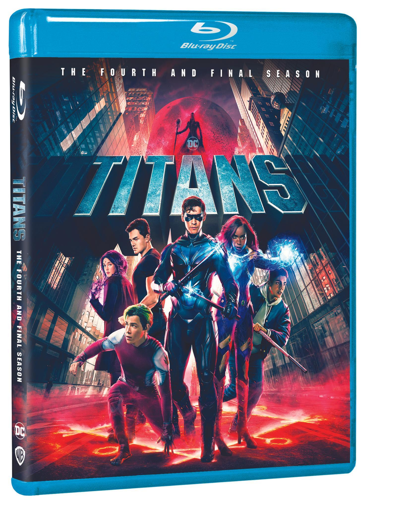

Home Entertainment
August 22, 2023
“Titans: The Fourth and Final Season” Coming to Blu-ray and DVD on October 17, 2023

(Burbank, CA) - After three explosive seasons, the hit TV show inspired by DC comic book characters concludes in Titans: The Fourth and Final Season, arriving on Blu-rayTM and DVD on October 17, 2023. A gritty take on the Teen Titans franchise, Titans follows a group of young Super Heroes from the DC Universe. As they come of age and try to find where they belong, the Titans must defend against supervillains, dark conspiracies, corrupt laboratories, and demonic possessions – across Metropolis and beyond.
Also available on October 17, is Titans: The Complete Series on Blu-rayTM and DVD, which includes all four seasons of the comic-inspired series in one set.
Season four stars Brenton Thwaites as Dick Grayson/Nightwing, Anna Diop as Kory Anders/Starfire, Teagan Croft as Rachel Roth/Raven, Ryan Potter as Gar Logan/Beast Boy, Joshua Orpin as Connor Kent/Superboy, Jay Lycurgo as Tim Drake with Franka Potente as May Bennett/Mother Mayhem and Joseph Morgan as Sebastian Sanger/Brother Blood.
Titans is produced by Berlanti Productions in association with Warner Bros. Executive producers for the fourth season of Titans are Akiva Goldsman, Geoff Johns, Greg Walker, Greg Berlanti, Sarah Schechter and Richard Hatem
Titans: The Fourth and Final Season and Titans: The Complete Series will be available on Blu-rayTM and DVD to purchase online and in-store at major retailers on October 17, 2023.